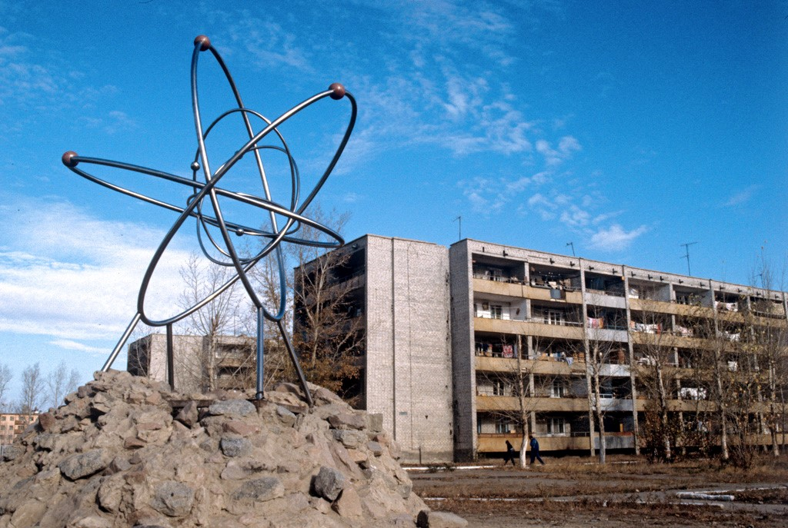
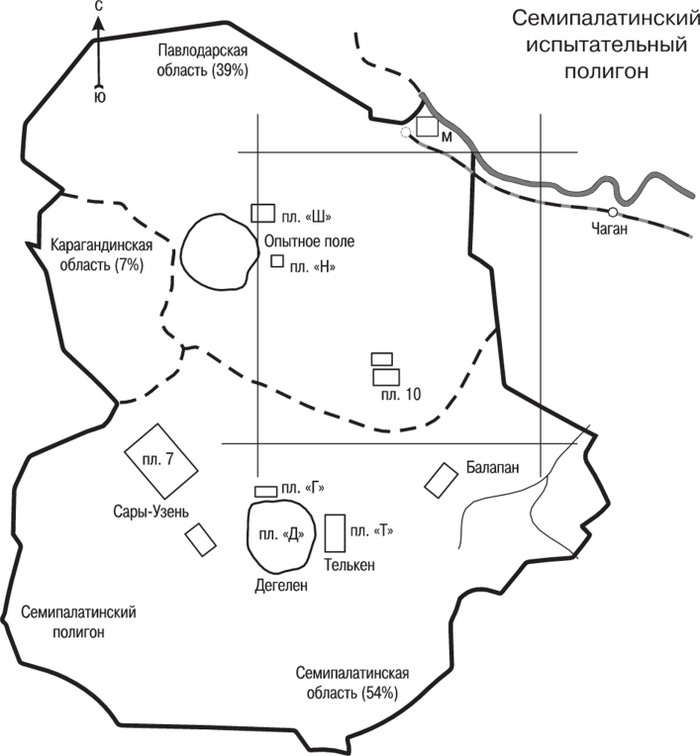
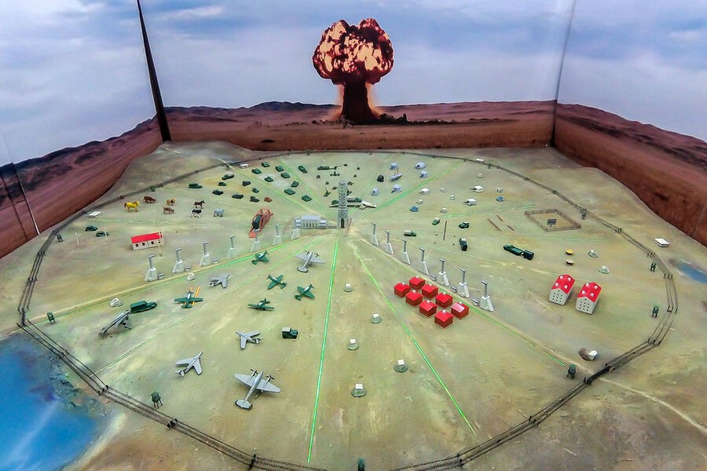

Семипалатинский испытательный полигон — первый и один из крупнейших ядерных полигонов СССР, также известный
как Семипалатинский испытательный ядерный полигон. Официальное название: 2-й Государственный центральный
научно-исследовательский испытательный полигон (2 ГЦНИИП). В среде испытателей полигон получил неофициальное
название «Двойка».
Опытное поле полигона разделено на несколько площадок:
- П-1: На этой площадке была испытана первая атомная бомба, а затем - водородная, также площадка использовалась для нескольких других наземных испытаний.
- П-2: Площадка для наземных ядерных испытаний.
- П-3: Площадка для воздушных испытаний ядерных бомб малой и средней мощности.
- П-5: Площадка для воздушных испытаний ядерных бомб большой мощности.
- П-7: Площадка для испытания сейсмического воздействия ближнего ядерного взрыва малой мощности.

С
1949
по 1989
годы на территории Казахстана действовал Семипалатинский испытательный полигон (СИЯП) —
крупнейший ядерный полигон в истории. На площади 18 500 км² было произведено более 460 ядерных взрывов
(свыше 600 устройств), включая воздушные, наземные и подземные. Испытания проводились вблизи населенных
пунктов нескольких областей Казахстана, что привело к радиационному загрязнению восточной части страны и
сделало некоторые районы зонами экологического бедствия. Более 1,7 миллиона человек подверглись воздействию
радиации. Последствия для здоровья более 1 миллиона казахстанцев включали врожденные заболевания, рак,
поражения иммунной и нервной систем, генетические изменения и другие тяжелые заболевания. Власти долгое
время отрицали связь этих проблем с деятельностью полигона.
